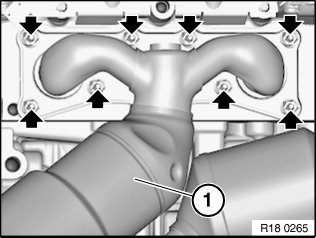
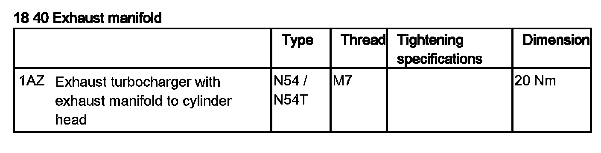
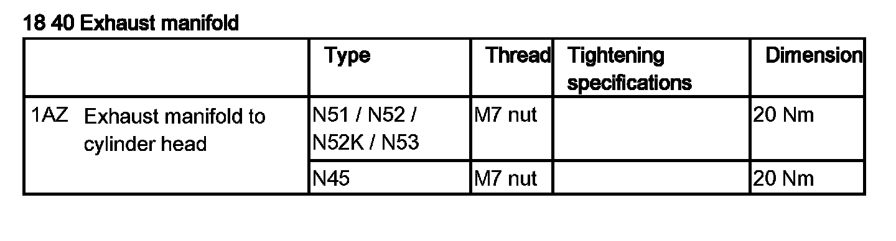

Removing and Installing/Replacing Rear Exhaust Manifold
18 40 060 Removing and installing/replacing rear exhaust manifold (N52, N52K)Necessary preliminary work:
^ Remove acoustic cover
^ Release coolant expansion tank and place to one side.
Do not remove the expansion tank and do not drain the coolant.
^ Remove underbody protection
^ Remove complete exhaust system.
Note:
The oxygen sensors are in danger of being damaged when the exhaust manifolds are removed and installed.
Remove control sensor from cylinders 4 to 6.
Remove monitoring sensor from cylinders 4 to 6.
Unscrew nuts.

Remove exhaust manifold (1).
Installation Note:
Clean sealing surfaces and replace seals.
Replace nuts.
Tightening torque 18 40 1AZ.
Reassemble the vehicle.
Check exhaust system for tightness.

